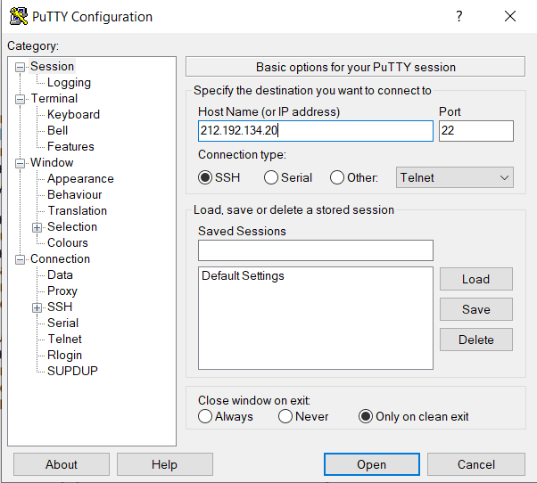
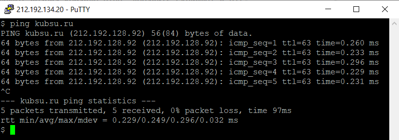
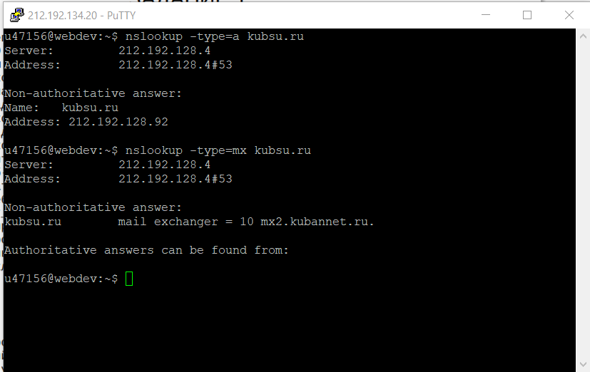
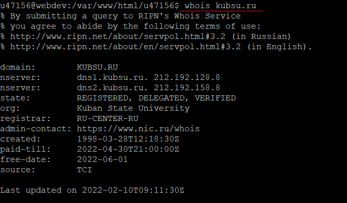
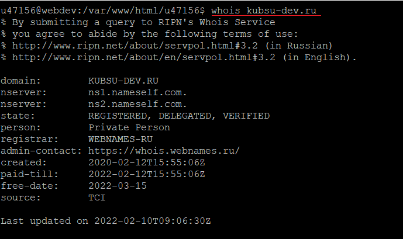
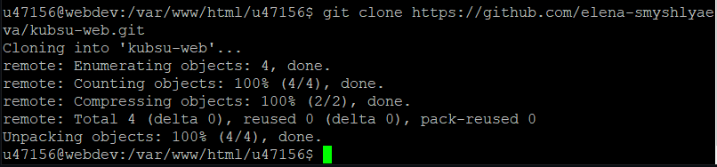

Установлен клиент PuTTY

Выполнена утилита ping, позволяющая установить соединение с сервером, проверить время отклика и целостность передающейся информации

nslookup позволяет посмотреть IP-адрес сервера и узнать ресурсные записи для домена(А- доменное имя, MX- почтовый ресурс)
В данном примере у сервера с доменным именем kubsu.ru (ip-адрес 212.192.128.92) имеется почтовый ресурс mx2.kubannet.ru

whois - это сетевой протокол, который предназначен для получения информации о владельцах IP адресов и доменных имен. Например, владельца домена, регистратора, имена DNS серверов, дату регистрации.
Рассмотрим данный пример:
- Доменное имя: KUBSU.RU
- DNS сервер с адресом 212.192.128.8
- Состояние домена: зарегистрирован, делигирован, данные администратора подтверждены
- Регистратор: RU-CENTER-RU
- Организация, оплачивающаяд домен: Kuban State University
- Ссылка на форму обратной связи с администратором: https://www.nic.ru/whois
- Дата создания: 28.03.1998
- До какого числаа оплачено доменное имя: 30.04.2022
- В случае неоплаты, доменное имя освобождается: 01.06.2022

- Доменное имя: KUBSU-DEV.RU
- DNS сервера, не содержащие имя домена
- Состояние домена: зарегистрирован, делигирован, данные администратора подтверждены
- Регистратор:WEBNAMES-RU
- Домен арендуется частным лицом
- Ссылка на форму обратной связи с администратором: https://whois.webnames.ru/
- Дата создания: 12.02.2020
- До какого числаа оплачено доменное имя: 12.02.2022
- В случае неоплаты, доменное имя освобождается: 15.03.2022
